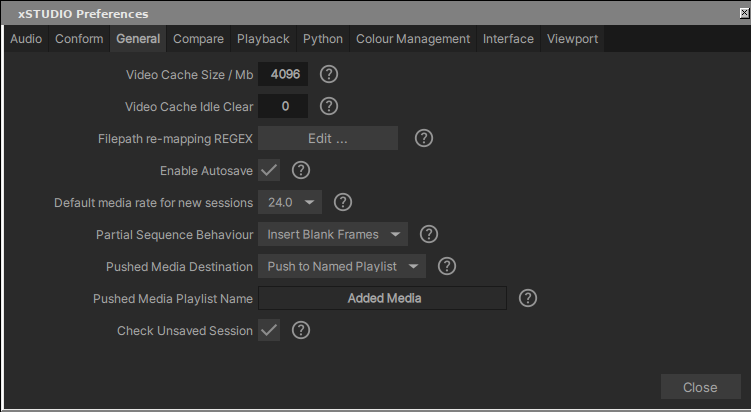

xSTUDIO Preferences
ユーザーインターフェースやアプリケーションのコア、およびその再生エンジンにおける、xSTUDIOのコンポーネントに影響を与える多くの設定は、環境設定システムを介して制御されます。環境設定は環境設定ファイルのロードによってセットアップされます。一般のユーザーはこれらのファイルやその動作を意識する必要はありませんが、ここではそれらのファイルがどのように機能し、xSTUDIOのcustomisationを駆動するためにどのように使用できるかについての詳細を記載します。これは、xSTUDIOの独自のカスタム設定や構成を制御したい、ポストプロダクションスタジオのような大規模な組織にとって特に有用です。
The Preferences Manager
ユーザーが制御したいと思う可能性のある多くの設定には、このインターフェースからアクセスできます。メインメニューバーのFile->Preferences->Preference Managerメニューから起動できます。ユーザーの環境設定は、ナビゲーションを容易にするためにカテゴリ別のタブに分類されています。ユーザーが活用したいと思うような多くのcustomisationsが含まれているため、これらの設定を一通り確認してみる価値はあります。
{kind=link}

The Preferences Manager
Note
各環境設定項目には、その機能を説明するツールチップがクエスチョンマークのボタンに用意されており、多くの場合、詳細な説明が記載されています
Clearing User Preferences
ユーザーの環境設定をクリアしてxSTUDIOをデフォルトの構成に復元するには、xSTUDIOが定期的に保存するユーザー環境設定ファイルを削除(または、バックアップを残すために移動)します。
mv $HOME/.config/DNEG/xstudio $HOME/.config/DNEG/xstudio_safe
Preference Files (for developers)
(このセクションは開発者やdeploymentを管理する方に特に入用ですが、個々のユーザーにとっても有用な情報が含まれています)
xSTUDIOは定期的に、またアプリケーションの終了時には必ず、ユーザー環境設定の現在の状態を保存します。ユーザー環境設定ファイルの場所は$HOME/.config/DNEG/xstudioです。環境設定ファイルのフォーマットはjsonです。user環境設定ファイルにエントリが存在する場合、それは対応する環境設定の値がデフォルト値から変更されており、次回xSTUDIOが起動するときにオーバーライドされることを意味します。デフォルトの環境設定は、xSTUDIOのディストリビューション(およびsource code)の一部であるshare/preferencesフォルダ内のファイルで定義されており、これらのデフォルト環境設定ファイルを確認することは、xSTUDIOの構成がどのように駆動されるかを理解するのに役立ちます。
xstudioの起動時に、コマンドラインオプション–prefを介して追加の環境設定ファイルをロードすることもできます。これにより、ポストプロダクションスタジオのような組織は、適切なラパースクリプトやカスタム環境設定ファイルを使用して、デフォルトのxSTUDIO設定をオーバーライドできます。